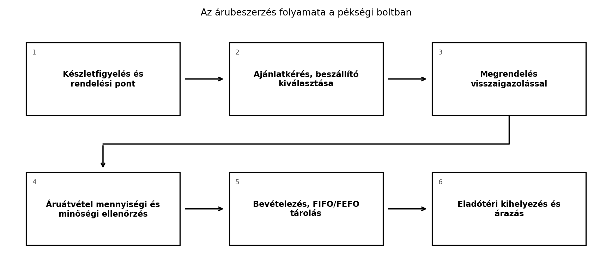

A pék hajnalban megsüti a kenyereket, a péksüteményeket és a finom pékárut. A munka azonban nem ér véget a kemencénél: a terméknek el kell jutnia a vevőhöz, frissen, megfelelő mennyiségben és olyan áron, amely fedezi a költségeket és a nyereséget. Ha a boltban reggel kilencre elfogy a kifli, a vevő máshová megy. Ha viszont délutánra harminc kiló kenyér marad meg, az veszteség. A kereskedelem, az árubeszerzés, a készletgazdálkodás és az értékesítés ismerete nem papírmunka: azt dönti el, hogy a jó termék nyereséget hoz-e, vagy felesleges készletként, lejárt áruként landol a veszteséglistán.
Az alábbi folyamatábra azt mutatja, hogyan jut el az áru a beszállítótól a pékségi bolt polcáig. A lépések közül a készletfigyelés és az áruátvétel a legkritikusabb: itt dől el, hogy mennyit és milyen minőségben veszünk.

A folyamat első lépése, a készletfigyelés azért áll az élen, mert minden további rendelés és értékesítés erre épül. Ha a pék nem tudja, mennyi liszt van a raktárban, vagy mennyi kelt tészta fogyott el az elmúlt héten, akkor a rendelés csak tippelés.
Definíció. A kereskedelem az gazdasági tevékenység, amely adásvétellel összekapcsolja a termelőt és a fogyasztót, vagyis az árut a termelőtől a fogyasztóig juttatja, és ezzel értéket teremt: a megfelelő terméket, a megfelelő helyen, a megfelelő időben, a megfelelő mennyiségben és a megfelelő áron kínálja.
A kereskedelem két nagy szintje:
A sütőiparban gyakori a vegyes út: a pék maga gyárt, saját márkaboltban kiskereskedelemben értékesít, ugyanakkor viszonteladóknak is szállít. Ez a kettősség más készletgazdálkodást és árpolitikát igényel, mint a csak pultos értékesítés.
Definíció. A bolttípus az üzlet működési módja és szerepe alapján kialakított kategória. A sütőiparban az alábbiak a legfontosabbak:
Szabály. A péknek mindig a termék sajátosságából kell kiindulnia: a hagyományos, csomagolatlan kenyér és péksütemény friss, rövid eltarthatóságú termék, ezért a legjobb közvetlen, pultos értékesítéssel. Az előre csomagolt, hosszabb minőségmegőrzési idejű termékek nagyobb távolságra és önkiszolgáló környezetben is értékesíthetők.
Definíció. Az áru minden olyan termék vagy szolgáltatás, amelyet eladásra kínálnak, és amelyért a vevő pénzben fizet. A sütőipari termék fogyasztási cikk, azon belül élelmiszer: a fogyasztó közvetlenül elfogyasztja.
A pékségi árukat több szempontból csoportosíthatjuk:
Előírás. Az élelmiszerek forgalmazására a hatályos élelmiszerjogi követelmények, így a 178/2002/EK rendelet általános elvei és a 852/2004/EK rendelet higiéniai szabályai érvényesek (ellenőrizendő: a hatályos rendeletkonszolidáció). A sütőipari terméket csak akkor lehet forgalomba hozni, ha biztonságos, nyomonkövethető és a fogyasztói tájékoztatás teljes.
Definíció. A forgalomképesség azt mondja meg, hogy az áru szabadon forgalmazható-e. Az élelmiszerek általában szabad forgalmú áruk, de a jelölt dátum lejárta után a forgalmazhatóság korlátozott. Kétféle dátumot különböztetünk meg.
Definíció. A fogyaszthatósági idő („Fogyasztható: …”) a mikrobiológiai szempontból gyorsan romló, hűtött termékek (például tejszínes, krémes, túrós töltelékű finom pékáru) dátuma. Lejárta után a termék nem biztonságosnak minősül, nem forgalmazható és nem adományozható, még akkor sem, ha érzékszervileg épnek látszik.
Definíció. A minőségmegőrzési idő („Minőségét megőrzi: …”) a minőségre vonatkozik: lejárta után a termék nem feltétlenül veszélyes, de a forgalmazása a hatályos hazai szabályok szerint csak feltételekkel (például elkülönítve, egyértelmű tájékoztatással) lehetséges, és a pékség belső szabálya ennél szigorúbb lehet (ellenőrizendő: 1169/2011/EU 24. cikk, a hazai végrehajtási rendelet, NÉBIH-útmutató). A csomagolatlan, friss pékárunál jellemzően nincs jelölt dátum; ott a pékség saját szabálya (például a napi eladás vége) dönt.
Szabály. Az árubeszerzés célja, hogy a szükséges nyersanyag és áru időben, megfelelő minőségben, elfogadható áron rendelkezésre álljon, de ne kössön le felesleges tőkét. A folyamat lépései:
HACCP. Az élelmiszer-átvétel és a bolti kihelyezés élelmiszer-biztonsági szempontból kritikus lépés lehet. Átvételkor ellenőrizni kell a hűtött áru hőmérsékletét, a csomagolás sértetlenségét, a minőségmegőrzési időt és az idegen anyagok jelenlétét. A határértékek, például a hűtött termék legmagasabb szállítási hőmérséklete, a pékség HACCP-tervében szerepelnek (ellenőrizendő: a pékség HACCP-terve, a jelenlegi hatósági útmutató).
Definíció. A készlet a vállalkozás tulajdonában lévő, átmenetileg raktáron vagy boltban tárolt, értékesítésre vagy gyártásra váró anyagok és termékek összessége. A pékségnél készlet a liszt, a csomagolóanyag, a töltelék, a félkész tészta és a kész pékáru.
Definíció. A készletgazdálkodás az a tevékenység, amely a készletek mennyiségét, összetételét és forgását úgy irányítja, hogy az áru ne fogyjon el a kritikus pillanatban, de ne is heverjen felesleges tömegben. A készletgazdálkodás nem spórolásból áll, hanem egyensúlykeresésből.
A készletgazdálkodás alapelvei:
Szabály. A FIFO (first in, first out) a beérkezési sorrend, a FEFO (first expired, first out) a legkorábbi lejárat szerinti kiadást jelenti. A pékáru és a sütőipari nyersanyagok esetében a FEFO a helyes, mert a minőségmegőrzési idő dönt. A régi tételt előrébb kell helyezni, az új tételt mögé tenni.
A készletnyilvántartás alapösszefüggése:
ahol a mennyiséget jelenti. Ez az egyenlet minden anyagcsoportra külön vezethető, a lisztkészlettől a bolti csomagolóanyagig.
Higiénia. A bolti készletet nemcsak mennyiségileg, hanem minőségileg is figyelni kell. A polcon megmaradt, csomagolatlan pékárut a friss áru elé kell tenni, de csak akkor, ha még biztonságos és értékesíthető. A krémes, hűtést igénylő terméket mindig hűtőpultban kell tárolni; a hűtő hőmérsékletét naplózni kell.
A készletgazdálkodás legfontosabb kérdése: milyen gyorsan fordul meg a készlet, és mikor kell rendelni.
Definíció. A készletforgási sebesség azt mutatja, hogy egy időszakban a készlet hányszor cserélődik le, vagyis hányszor adjuk el és pótoljuk a készletet.
Összefüggés.
ahol:
Az átlagkészlet legegyszerűbb becslése:
A forgási idő megadja, hány nap alatt cserélődik le a készlet:
A rendelési pont mennyiségére:
ahol a napi átlagos felhasználás vagy értékesítés, a szállítás időtartama, a biztonsági készlet.
A rendelési mennyiség közelítő számítása:
ahol a váratlan késés vagy többletfogyás kivédésére megadott biztonsági idő, a jelenlegi készlet, a már megrendelt, de még be nem érkezett mennyiség.
Megjegyzés. A sütőiparban a friss terméknél a rendelési mennyiség tervezése nem kilogrammra pontos előrejelzés, hanem folyamatos, napi igazítás. Az itt megadott képletek egyszerű tanulási modellek; a valós boltban a tapasztalat, a napi értékesítési napló és a szezonális hullámzás együtt ad pontosabb eredményt.
Számítás 1. Egy pékség lisztkészlete hétfőn reggel , vasárnap este . A heti lisztfelhasználás . Számítsuk ki az átlagkészletet, a forgási sebességet és a forgási időt.
Ellenőrzés. A 4-es forgási sebesség és az 1,75 napos forgási idő összhangban van: hetente négyszer cserélődik le a lisztkészlet. A nagyságrend reális egy élénk forgalmú pékségben, ahol a lisztet nem nagy tételben tárolják.
Számítás 2. Egy pékségi boltban a havi eladott áru beszerzési értéken . Az átlagkészlet értéke . Számítsuk ki a forgási sebességet és a forgási időt.
Harmincnapos hónapban:
Az eredmény értelmezése: a bolt átlagosan hatnaponta cseréli le a készletét. Friss pékáruknál a 6 napos forgási idő túl hosszú, mert a friss árunak naponta kell forognia; tartós, csomagolt termékeknél viszont ez reális érték.
Számítás 3. Egy pékségi boltban a kenyér napi átlagos értékesítése . A szállítási idő nap, a biztonsági készlet napi fogyasztásnak felel meg. A jelenlegi készlet reggel , és nincs már megrendelt szállítmány. Határozzuk meg a rendelési mennyiséget.
Először a biztonsági készlet:
A rendelési pont:
A jelenlegi készlet , tehát a rendelési pont alatt van, rendelni kell. A rendelési mennyiség a biztonsági idővel számolva:
Ellenőrzés. A szállítási idő (1 nap) alatt fogy el. A beérkezés pillanatában a készlet , vagyis épp a biztonsági készlet maradt meg; a rendelés tehát fedezi a szállítási időt és a biztonsági tartalékot. Fontos, hogy a készlet a szállítási idő alatti fogyásnál () nagyobb legyen: ha a jelenlegi készlet ennél kisebb (például ), a szállítás megérkezése előtt hiány lép fel, mert a rendelést korábban, a rendelési pont elérésekor () kellett volna leadni. A képlet csak a beérkezésig és a biztonsági tartalékig számol; a következő szállításig tartó fogyást (rendelési ciklus) a mennyiséghez hozzá kell adni, ha ugyanezt a készletszintet akarjuk fenntartani. A szállítás megérkezése után a következő rendelési ciklust újra figyelni kell. A modell egyszerű; a valós boltban a rendelési mennyiséget a maximumkészlet és a napi ingadozás is módosítja.
A sütőipari termékek értékesítésének négy alapvető útja:
Szabály. A friss pékárut naponta, rövid határidőre érdemes kiszállítani. A viszonteladónak is pontosan kell tudnia, hogy a termék meddig fogyasztható, milyen összetevőket tartalmaz, és hogyan kell tárolni. Erre a fogyasztói tájékoztatási szabályok és a szállítói szerződés együttesen adnak keretet.
A bolt megjelenése nemcsak esztétika, hanem értékesítési eszköz is. A külső kép a vevőt behívja, a belső kép az árura irányítja a figyelmet.
Külső kép:
Belső kép és berendezések:
Az alábbi mintaalaprajz egy kis pékségi bolton mutatja meg ezeket a szempontokat. A vevő a bejárattól (1) a vevőúton (2) előbb az önkiszolgáló polchoz (4) jut, ahol a csomagolatlan pékárut fedett rekeszekből, fogóval veszi zacskóba, majd a pult (3) előtt, az allergéntábla (5) látómezejében várakozik, és a kijárat melletti kasszánál (6) fizet. A pult vevő felőli oldalán üvegvédő van; a krémes, tejtermékes töltelékű áru a hűtőpultba (9) kerül. Az árut hátulról, a raktár felől töltik fel (7), így az eladó nem keresztezi áruval a vevőutat. A kézmosó (8) és a kenyérszeletelő (10) a pult mögött, a vevők elől elzárva áll.
Ellenőrzési pontok az alaprajzon: a csomagolatlan áruhoz a vevő csak fogóval és fedett rekeszből férhet hozzá; az allergéninformáció a pultnál, az áruval azonos látómezőben van; a pénzkezelés (kassza) elkülönül a csomagolatlan áru kiszolgálásától; a vevőút és az árufeltöltés útja nem keresztezi egymást. A rajz mintavázlat, nem tervrajz: a konkrét elrendezést a helyiség, a HACCP-terv és a hatósági előírások határozzák meg (ellenőrizendő: HACCP-terv, 1169/2011/EU és a hazai végrehajtási szabályok). A HTML-kiadásban a részek rámutatásra kiemelődnek, a vevőút, az árufeltöltés és a higiéniai elemek rétegként ki-be kapcsolhatók.
Gépbiztonság. A bolti kenyérszeletelő gépet csak betanított, felnőtt személy kezelheti, a védőburkolatot soha nem szabad eltávolítani. A tisztítást és a pengekezelést csak leállított, áramtalanított, újraindítás ellen biztosított gépen szabad végezni. A gépbiztonsági szabályok minden bolti gépre érvényesek (ellenőrizendő: a gyártó használati útmutatója és a hatályos munkavédelmi előírások).
HACCP. A boltban a hűtőpult hőmérséklete, a polcok tisztasága, az allergén-tájékoztató megléte, a csomagolatlan pékáru fogójának/kiszolgálóeszközének higiéniája folyamatosan ellenőrzendő. A lejárt, sérült csomagolású, vagy nem megfelelő hőmérsékleten tartott terméket azonnal el kell különíteni és le kell selejtezni. A pontos határértékek az üzlet HACCP-tervéből következnek (ellenőrizendő: HACCP-terv).
Allergén. A csomagolatlan pékáru esetén is tájékoztatni kell a vevőt az allergénekről. A hagyományos kenyérnél a glutén, a tejes vagy tojásos termékeknél a tej és a tojás, a diós kalácsnál a diófélék, a magvas termékeknél a szezám a legfontosabb. A mák nem tartozik a 14 jogszabályi allergéncsoport közé; érzékenység esetén önkéntes tájékoztatás adható (ellenőrizendő: 1169/2011/EU II. melléklet). A boltban az allergén-táblázatot a pult közelében, az áruval azonos látómezőben kell elhelyezni (ellenőrizendő: 1169/2011/EU rendelet és a magyar végrehajtás aktuális előírásai). A keresztszennyeződés elkerülésére a diós-mákos termékeket a pultban elkülönítve tároljuk, és a kiszolgáló eszközt ne használjuk más termékhez.
Egy kisvárosi pékség saját boltjában a pék azt tapasztalja, hogy a natúr kifli délelőtt elfogy, de a teljes kiőrlésű kenyérből naponta 10–15 kg megmarad. A tulajdonos a naplóból kiszámolja: a kifli napi átlagos eladása 80 kg, a teljes kiőrlésű kenyérből csak 30 kg, miközben a boltban 42 kg-ot sütnek (így a maradék 12 kg/nap). A készletgazdálkodási hiba kétszeres: a kifli készlet alulméretezett, a teljes kiőrlésű kenyér készlete túlméretezett. A pék módosítja a sütési tervet, és a kifli mennyiségét növeli, a teljes kiőrlésű kenyérét csökkenti. Emellett a megmaradt kenyérből délután féláron, a pékség belső szabálya szerinti értékesítési határidőn belül, a pultban jól látható „tegnapi/délutáni” felirattal kínál egy részt, a többit pedig szárított kenyérmorzsaként értékesíti. A tanulság: a készletgazdálkodás és az értékesítési adatok napi figyelése nélkül a legjobb termék is veszteséggé válik.
A pékségi bolt minőség-ellenőrzése nemcsak a termékre, hanem a folyamatra is kiterjed:
1. feladat (A). Definiáld az áru fogalmát, és sorold fel a pékségi boltban leggyakoribb termékcsoportokat.
2. feladat (A). Egy pékség lisztkészlete hétfőn reggel 300 kg, pénteken este 180 kg. Mennyi az átlagkészlet?
3. feladat (B). Számítsd ki a forgási sebességet és a forgási időt: havonta 1500 kg lisztet használnak fel, az átlagkészlet 150 kg. A hónap 30 nap.
4. feladat (B). Egy boltban a kifli napi eladása 70 kg. A szállítási idő 1 nap, a biztonsági készlet 35 kg, a jelenlegi készlet 85 kg. Rendelni kell-e? Ha igen, mennyit rendeljünk a rendelési mennyiség képlete alapján (biztonsági idő 0,5 nap)?
5. feladat (C). Tervezd meg egy pékségi bolt belső képét: írd le a vásárlói útvonalat, és helyezd el a pultot, a kenyérszeletelőt, a hűtőpultot, a pénztárt és az allergén-tájékoztató táblát. Indokold, miért az adott sorrendben halad a vevő.
6. feladat (D). A bolti naplóból kiderül: a briós minden nap délutánra elfogy, de a rozskenyérből 8 kg megmarad. A polcon a régebbi briós a friss mögé kerül. Milyen két készletgazdálkodási hibát látsz, és mit javasolsz?
Önellenőrzés – válaszok
1. feladat megoldása. Az áru minden, eladásra kínált termék vagy szolgáltatás, amelyért a vevő fizet. A pékségi boltban leggyakoribb termékcsoportok: kenyér, péksütemény, finom pékáru, mézeskalács, egyéb sütőipari termék.
2. feladat megoldása. Átlagkészlet = (300 kg + 180 kg) / 2 = 240 kg. Ez a heti átlagos lekötött lisztmennyiség.
3. feladat megoldása. Forgási sebesség = 1500 kg / 150 kg = 10. Forgási idő = 30 nap / 10 = 3 nap. A lisztkészlet havonta tízszer, azaz háromnaponta cserélődik.
4. feladat megoldása. A rendelési pont = 70 kg/nap · 1 nap + 35 kg = 105 kg. A jelenlegi készlet 85 kg, tehát a rendelési pont alatt van, rendelni kell. Rendelési mennyiség = 70 kg · (1 + 0,5) − 85 kg = 105 kg − 85 kg = 20 kg. A biztonsági idővel számolva 20 kg-os rendelés szükséges. Ellenőrzés: a beérkezéskor a készlet kg, ami a biztonsági készlet.
5. feladat megoldása. A vásárlói útvonal: bejárat → pult (friss kenyér, kifli) → kenyérszeletelő a pult mögött, a vevők elől elzárva (csak az eladó kezeli) → hűtőpult a krémes termékekhez → allergén-tájékoztató tábla a pulttal szemben, szemmagasságban → pénztár a kijárat közelében. A friss termék legyen a leghamarabb elérhető, az allergén-tájékoztató a pult közelében, mert a vásárló itt várakozik. A hűtőpult a vevőtérben legyen, a pult mellett, hogy a krémes, tejtermékes áru hűtve, de látható helyen kerüljön a vevőhöz; a szeletelőgép a pult mögött, a vevők elől elzárva álljon, mert csak az eladó kezelheti, a vevő pedig a pult előtt várja a frissen szeletelt kenyeret.
6. feladat megoldása. Az első hiba: a briós készlete alulméretezett, a rozskenyér készlete túlméretezett, mert a rendelés nem követi a napi értékesítési adatokat. A második hiba: a FEFO/FIFO elv megsértése, mert a régebbi briós a friss mögé kerül. Javaslat: a briós mennyiségét növelni, a rozskenyérét csökkenteni kell, és a polcra a régebbi terméket előre tenni. Emellett a rozskenyér megmaradását csökkenteni lehet a készletforgási adatok elemzésével.
A kereskedelem az árut a termelőtől a fogyasztóig juttatja. A nagykereskedelem viszonteladóknak, a kiskereskedelem közvetlenül a vevőnek értékesít. A pékségi bolt lehet pultos szaküzlet, önkiszolgáló, láncélelmiszerboltban lévő pult, vagy online értékesítés része. Az árubeszerzés a készletfigyeléssel indul, rendeléssel, átvétellel, bevételezéssel és eladótéri kihelyezéssel folytatódik. A készletgazdálkodás alapja a nyilvántartás, a FIFO/FEFO elv, a min/max készlet, a forgási sebesség és a rendelési pont. A készletforgási sebesség képlete: ; a forgási idő az időszak napjainak és a forgási sebességnek a hányadosa. A rendelési pont: . A pékségi bolt külső és belső képénél a tisztaság, a friss termék láthatósága, az allergén-tájékoztatás, a hűtőpult hőmérséklet-ellenőrzése és a gépek biztonságos kezelése mind az értékesítés része. Továbbvitt eredmény. Az itt tanult bolti folyamatok, a pénzforgalom és a fogyasztói kapcsolat a Vevők, pénzforgalom és fogyasztóvédelem alfejezetben kapcsolódik össze, ahol a vásárlói panaszok, az elszámolás és a fogyasztói jogok kerülnek előtérbe.